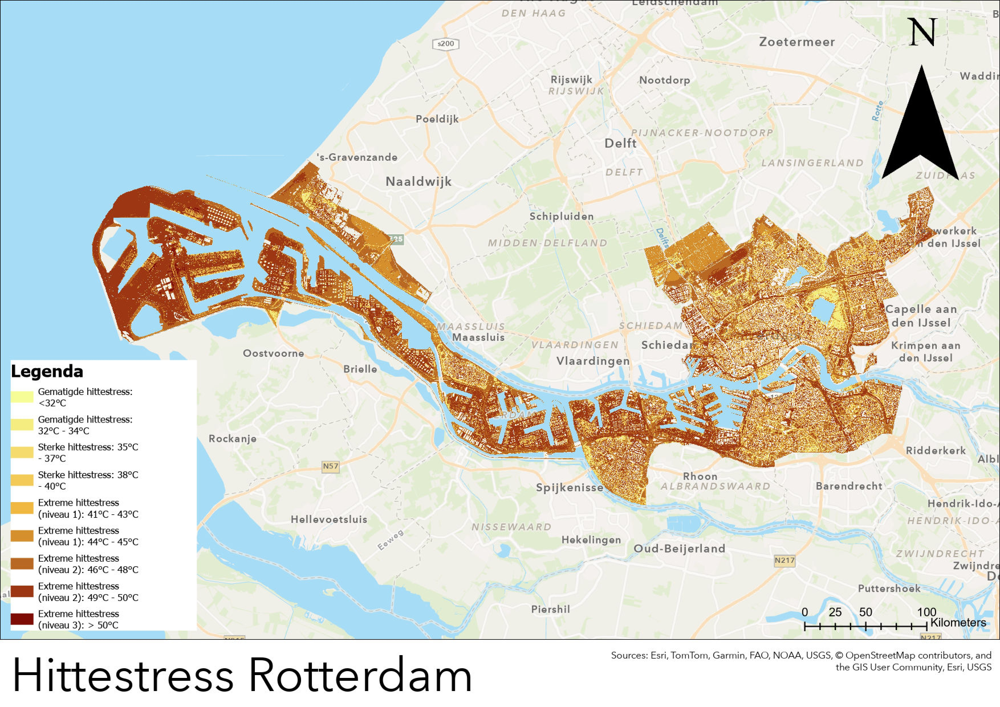

Ik ben Soufiane Errihani, student Watermanagement aan de Hogeschool Rotterdam. Via mijn opleiding heb ik al een sterke basis opgebouwd in methoden voor watergerelateerde vraagstukken, en recentelijk heb ik mijn vaardigheden uitgebreid met GIS-software, remote sensing, Python, SQL en Data Science. Momenteel ben ik op zoek naar een afstudeerstage waarin ik mijn kennis kan toepassen en verder kan ontwikkelen, bij voorkeur in GIS, data science, remote sensing of een gerelateerde richting.
Over Mij
Mijn Projecten

NDVI & Hittestress in Rotterdam
In dit onderzoek analyseer ik met behulp van remote sensing hoe de NDVI-waarden in Rotterdam invloed hebben op de hittestressdata uit de Klimaateffectatlas.